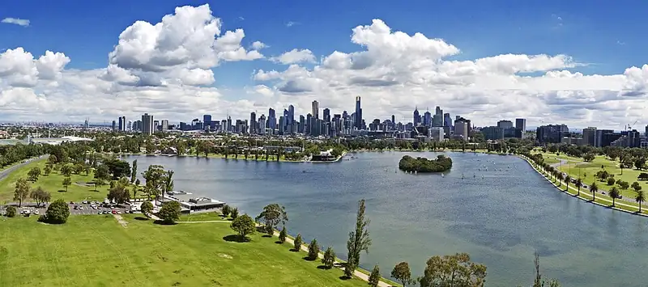

Albert Park
Albert Park is a park in Albert Park, in the Port Phillip City Council area, good for all ages. Fraser St/Light Rail #131 (tram) is a 16-minute walk away, the nearest public toilet is about 483 m away and dogs are allowed on a lead.


Quick facts
- Parking
- Paid
- Toilets
- 483 m away
- Dogs
- On lead
- Public transport
- Fraser St/Light Rail #131, tram (routes 96), 16 min walk
Details
- Dogs
- on lead (Parks Victoria)
- Toilets
- yes (Parks Victoria)
- Parking
- paid (Parks Victoria)
- Food
- BYO allowed (Parks Victoria)
- Good to know
- Nine picnic areas with free electric barbecues, playgrounds and shelters; Swimming, diving or wading in the lake is prohibited; Please do not feed the swans; Both on and off-lead dog areas (Parks Victoria)
Questions parents ask
- Where is Albert Park?
- Albert Park is in Albert Park, Victoria.
- Is Albert Park free?
- Yes. It is a public park, free to visit.
- Can I bring my dog to Albert Park?
- Yes, on a lead.
- Are there toilets at Albert Park?
- The nearest public toilet is about 483 m away.
- How do I get to Albert Park by public transport?
- The closest stop is Fraser St/Light Rail #131 (routes 96), a 16-minute walk.
- Is there parking at Albert Park?
- Parking: paid.
Nearby places
- Aughtie Drive Adventure Playground
Playground · Albert ParkToilet nearbyFreeTram 3 min walk
- Playground at Albert Park
Playground · Albert ParkFreeTram 7 min walk
- Canterbury Road Light Rail Linear Reserve
Park · Albert ParkFreeTram 5 min walk
- Middle Park Fish Chips
Cafe or restaurant · Middle ParkToilet nearbyTram 2 min walk
- The Roti Man
Cafe or restaurant · Middle ParkToilet nearbyTram 2 min walk
- Albert Reserve
Park · MelbourneFreeTram 3 min walk
- Middle Park Library
Library · Middle ParkToilet nearbyFreeBus 1 min walk
- West Beach
Beach · St Kilda WestToilet nearbyFreeBus 5 min walk